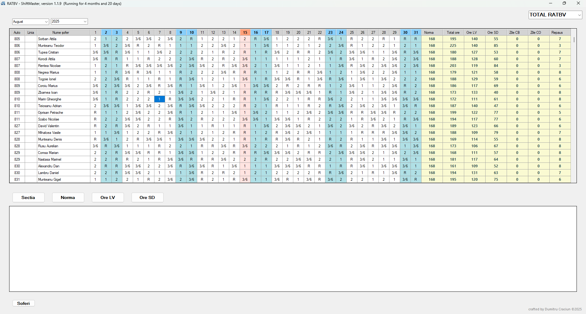
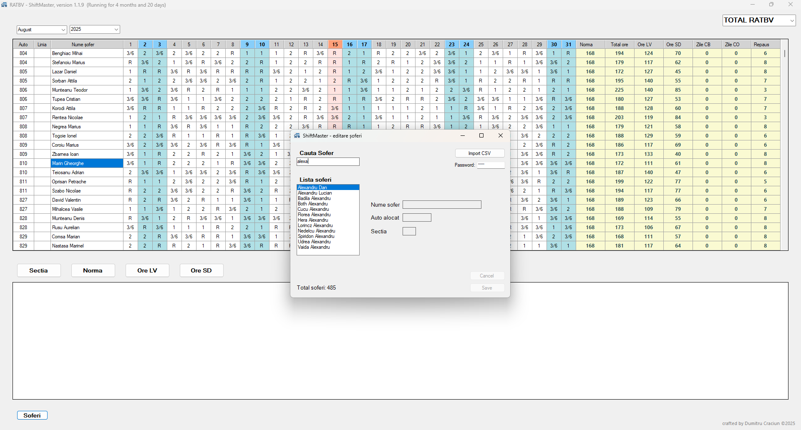

ShiftMaster - Intelligent Bus Driver Scheduling System
ShiftMaster is a smart, automated planning tool that generates and manages monthly bus driver schedules. It is designed to reduce manual work, eliminate planning conflicts, and provide a clear operational overview for transport managers.


- Automatic generation of monthly schedules based on available drivers
- Drag-and-drop reallocation of drivers to different buses or routes
- Real-time conflict detection (double shifts, unavailable drivers, missing assignments)
- Editable schedule timeline for instant updates by dispatchers
- Clean visual interface showing routes, drivers, and assignments
- Export-ready planning files for supervisors and HR
- Built to manage a fleet of 482 buses and 714 drivers